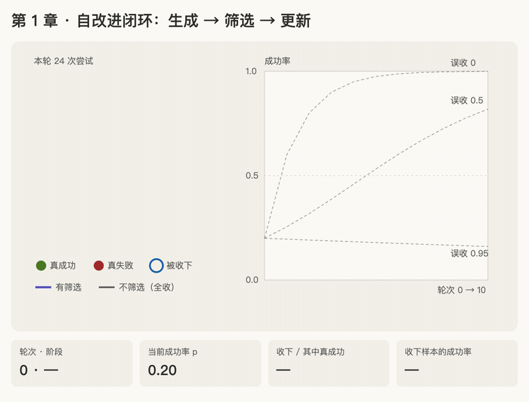

RSI 与 WAM/VLA · 讲义目录
副标题：从工具到自我进化。英文名 RSI with WAM / VLA: From Tools to Self-Improvement。
14 章大纲 · 已写 1 章 · 1 个动画（GIF + 可交互页面）· 10 张复习卡片 · 讲到哪章写哪章，每章照 讲义书范本 补动画、代码对照和复习卡片（AR01 起）
这本书讲什么
机器人模型已经能"看一眼、听一句、出动作"（VLA = Vision-Language-Action，视觉 / 语言 / 动作），也能在动手前"想象"接下来会发生什么（WAM = World Action Model，世界 / 动作 / 模型）。这本书问下一个问题：机器人能不能自己变强？
先讲清楚什么叫递归自改进（RSI = Recursive Self-Improvement，递归 / 自我 / 改进）和最小的"生成 → 筛选 → 训练"闭环；再看 Agentic VLA 怎么拆任务、调技能、训练规划器，WAM 和 Agentic WAM 怎么把计划、想象和动作放进一个模型；然后把闭环里每一环拆开：奖励从哪来、谁来重置场景、练什么、技能库怎么自己长大、怎么在想象里练、世界模型怎么自己改进；最后讲风险和"怎样才算证明了递归增益"。
- 适合谁：读过本仓库 VLA 讲义前几章，知道策略、动作块、flow matching 是什么；RL 只要知道"奖励、优势"这两个词，细节链接到 强化学习讲义。
- 读完能做什么：拿到一篇"self-improving / self-evolving robot"论文，能判断它在四个层级的哪一层、被改进的是什么、证据够不够；做 学习计划 的里程碑 AR-M0–AR-M7。
示例动画
| 动画 | 章 | 演什么 |
|---|---|---|
 |
第 1 章 全景 · ▶ 交互 | 生成 → 筛选 → 更新：筛选器比瞎猜好就往上走，比瞎猜差就往下掉 |
其他入口
- 学习计划：阶段 A–H、逐章论文、里程碑
- 复习卡片（AR01 起）
- 缩写与术语表
- 代码对照：每章的数字用 Python 算一遍
- 材料清单
- 前置：vla-deep-dive 面试资料 05–07（WAM、自主架构、Agentic VLA / WAM 全景）
目录
| 章 | 主题 | 一句话精要 | 动画 | 卡片 | 状态 |
|---|---|---|---|---|---|
| 1 | 全景：RL 怎样让 VLA / WAM 自己变强 | 生成 → 打分 → 更新；奖励变稠密、梯度变加权、想象要验证、agent 管闭环；RSI 四个层级 | 自改进闭环 | AR01–AR10 | ✅ 讲解（练习待作答） |
| 2 | 最小自改进闭环 | 生成 → 筛选 → 训练；验证比生成容易 | — | — | ⬜ |
| 3 | 让大模型当规划器 | SayCan、Inner Monologue、Code as Policies | — | — | ⬜ |
| 4 | 编排 + 执行 | Gemini Robotics 1.5、RoboOS | — | — | ⬜ |
| 5 | VLA 当工具，VLA 自己调工具 | VLAs-as-Tools、ART、ECoT | — | — | ⬜ |
| 6 | 训练规划器本身 | AgenticRoboRL | — | — | ⬜ |
| 7 | WAM 与 Agentic WAM | DreamZero、LingBot-VA、AW-0 | — | — | ⬜ |
| 8 | 奖励从哪来 | steps-to-go、RECAP、价值模型 | — | — | ⬜ |
| 9 | 真机自练 | RoboClaw、FIND、PLD | — | — | ⬜ |
| 10 | 技能库自己长大 | RATs、ASPIRE、PRACTICE、SkillRL | — | — | ⬜ |
| 11 | 在想象里练 | World-VLA-Loop、RISE、MERL | — | — | ⬜ |
| 12 | 世界模型自己变好 | WAV、EVO-WAM、R²-WAM、Motus2 | — | — | ⬜ |
| 13 | 风险与证据 | 钻想象空子、奖励黑客、怎样证明递归增益 | — | — | ⬜ |
| 14 | 总复盘 | 一张图串起整个自改进系统 | — | — | ⬜ |

各章要回答的问题见 学习计划 · 讲义章节大纲。
口诀汇总
- 第 1 章：生成打分再更新，经验分数改了谁；模仿不会自纠错，稀疏奖励变稠密；大模型稳小模块探，想象要验 agent 管；验证容易闭环升，改进流程是第四层。